03 · Train motion / P, PI, PD and PID / Engineering report
Train control: from signed force to a station stop
A physically constrained learning model connects Newton's second law, speed regulation, position feedback, actuator saturation, integral memory, and stopping feasibility.
Open the interactive companion →The engineering problem
How should one actuator accelerate a train, maintain speed under unknown resistance, and brake toward a fixed station without confusing tracking performance with physical stopping feasibility?
Presentation audit: the first dashboard repeated the same trace through six equations, six metrics, and five plots. The revised page keeps four live answers—position, speed, applied force, and stopping feasibility—while advanced inputs and integral-memory detail remain available without competing for attention.
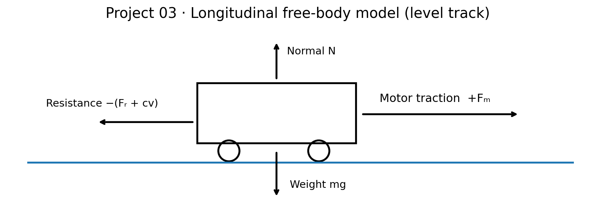
1. Two physical states and one signed actuator
Position x is measured in metres and forward speed v in metres per second. Positive actuator force is traction; negative force is active braking. While moving forward,
The baseline teaching model uses m = 20,000 kg, Froll = 2,000 N, c = 500 N·s/m, and independent ±40,000 N traction/brake assumptions. Requested force is clipped to these physical limits. At standstill, the forward-only constraint prevents a brake or insufficient traction request from manufacturing reverse motion.
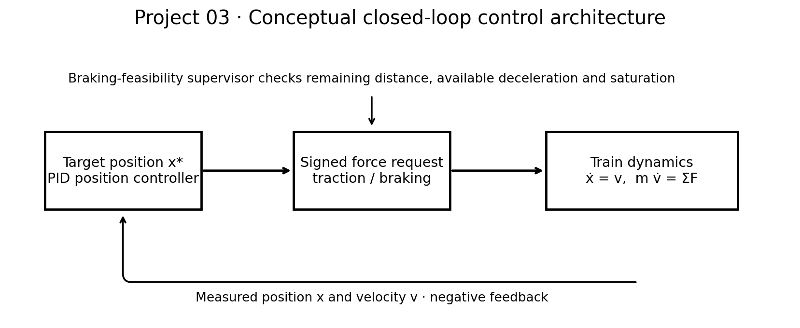
2. Old-state Euler with a real stop event
If the candidate speed is negative, the solver advances only to the within-step zero-speed event. Speed remains nonnegative and position never drifts backward.
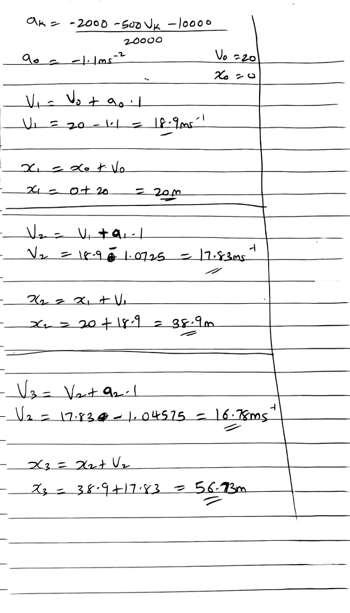
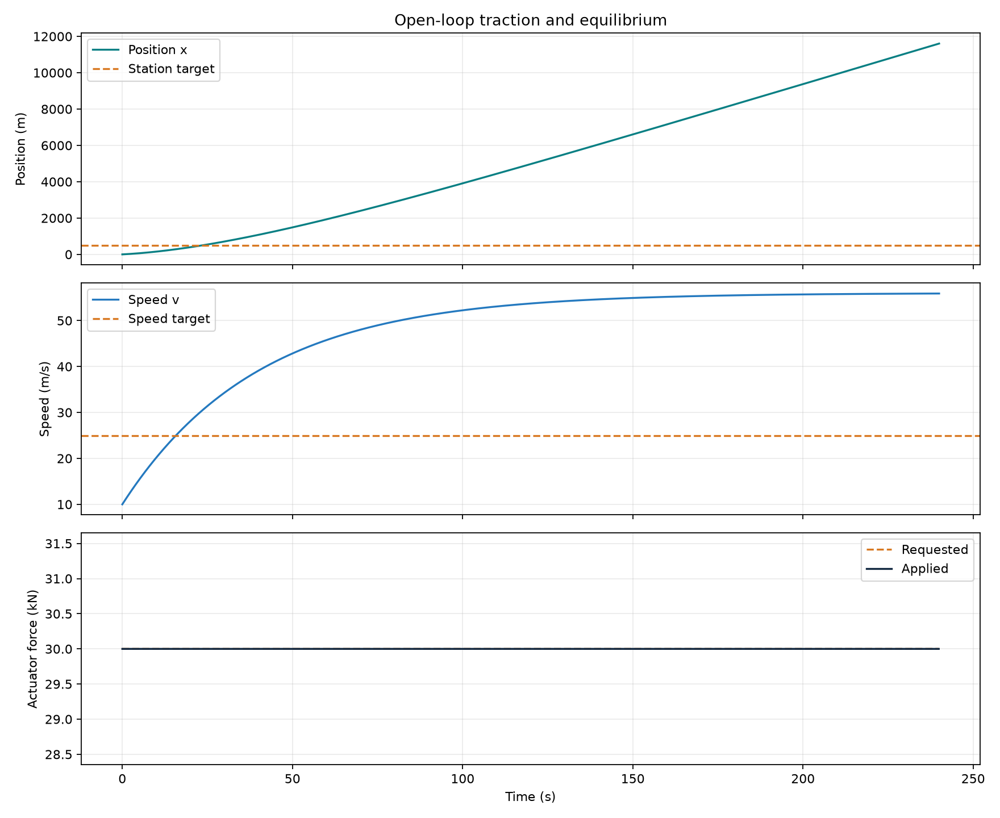
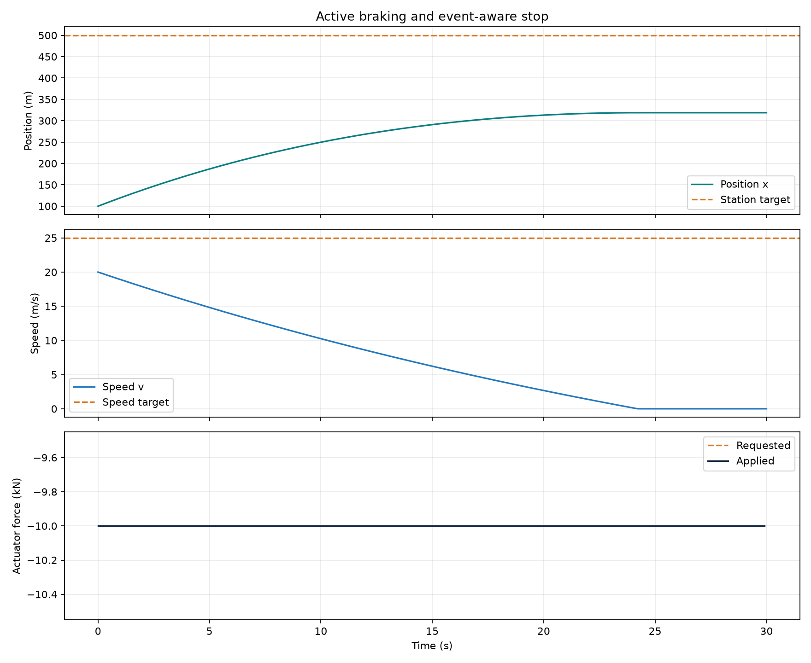
3. Why speed PI answers the P-only disturbance offset
For target vr, the nominal resistance bias is Fbias = Froll + cvr. An unknown opposing force is deliberately excluded from this bias.
With a 3 kN extra resistance, speed P analytically needs a 2 m/s error and settles at 23 m/s. PI can retain 3 kN through zv = 30 m while current speed returns toward 25 m/s.
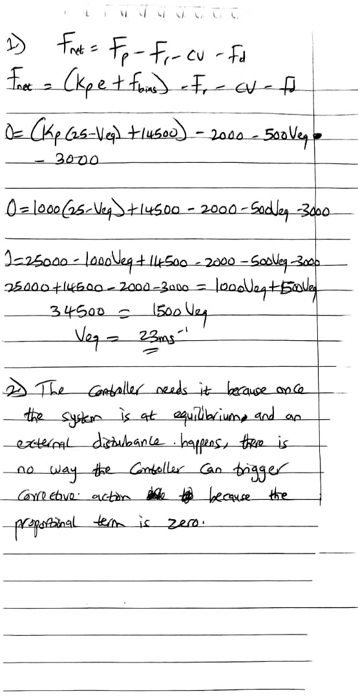
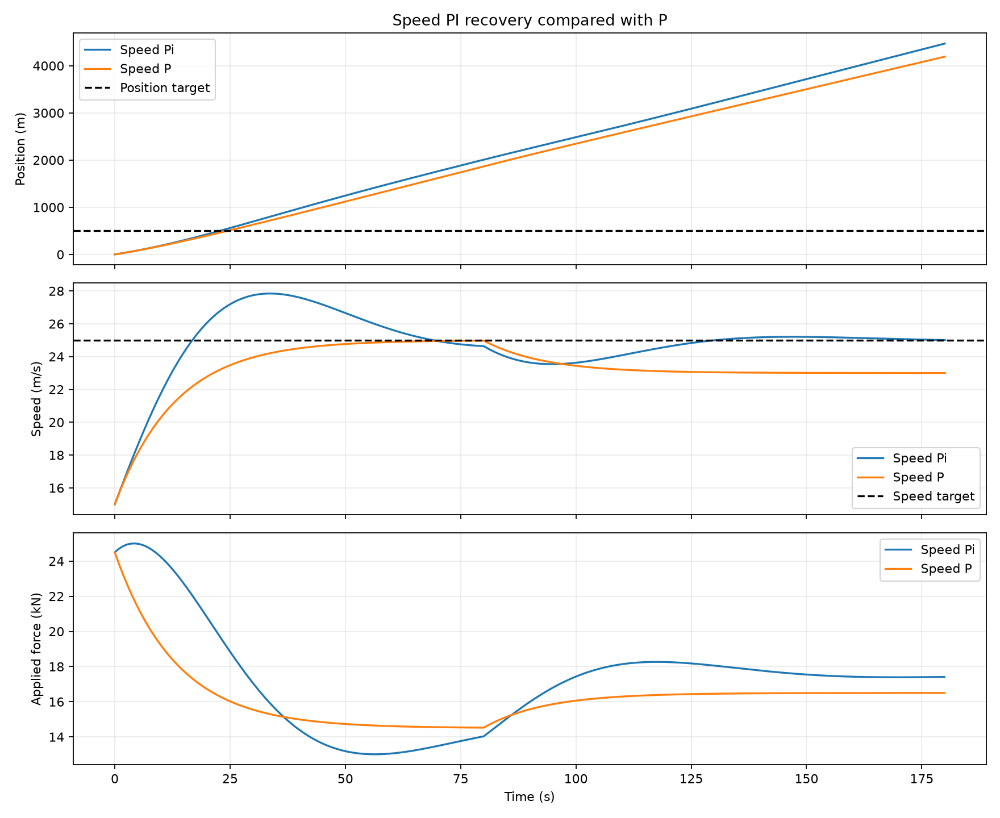
4. Position P, PD, and PID
For a fixed station, ex = xr − x and its derivative is −v. The derivative term is therefore direct velocity damping.
Speed-PI memory zv has units m; position-PID memory zx has units m·s. The prescribed learning gains are intentionally retained even when they perform poorly. PD stopped at 668.519 m and PID with initial memory stopped at 672.895 m, showing that feedback structure alone does not guarantee a station stop.
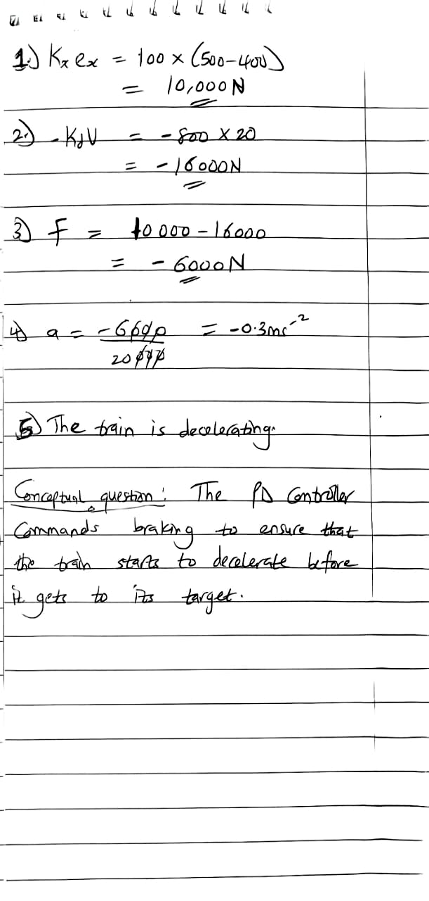
5. Conditional anti-windup is necessary but insufficient
At the 500 m initial error, PID requests 50 kN but only 40 kN can be executed. Conditional integration blocks memory growth that would drive the request farther into saturation and permits unwinding when error reverses.
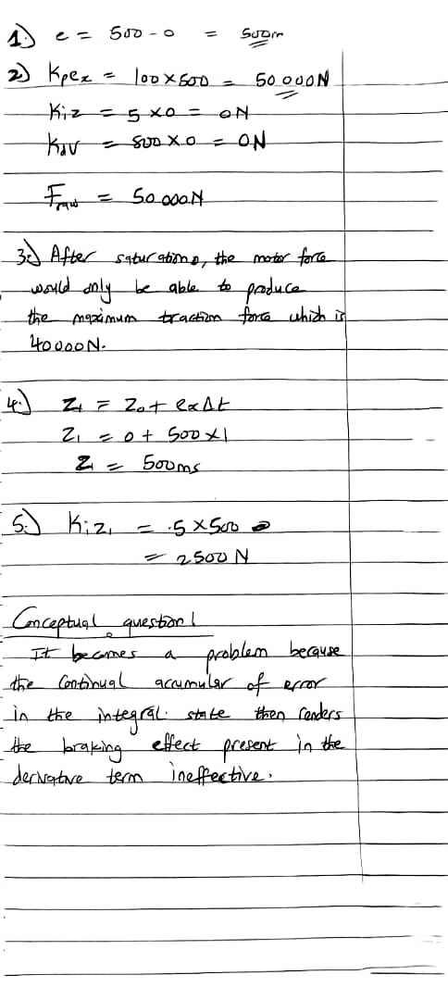
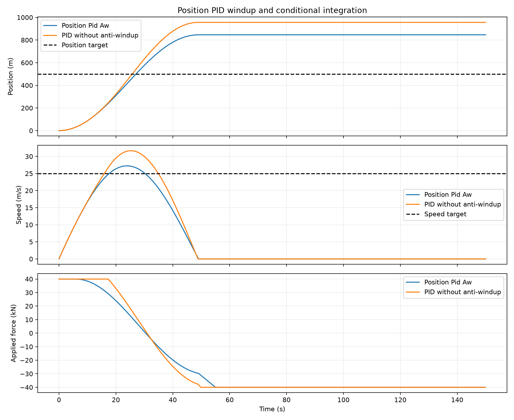
6. Stopping feasibility belongs outside PID
At x = 400 m and v = 20 m/s, 1 m/s² needs 200 m and cannot stop within the remaining 100 m. The separate educational supervisor latches maximum braking when the configured estimate becomes infeasible, releases after a stop, and holds zero force once stationary inside a 0.5 m target band.
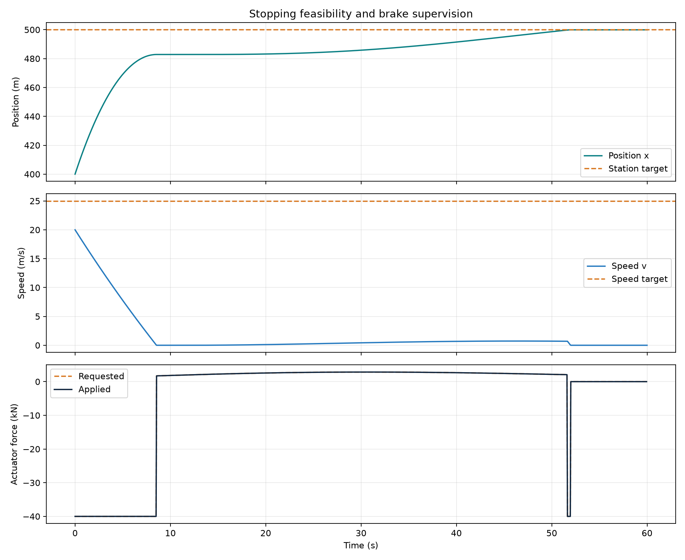
7. Executed results and verification
| Case | Simulation measurement | Interpretation |
|---|---|---|
| 30 kN open-loop | 55.8868 m/s at 240 s | Approaches analytical 56 m/s equilibrium |
| 10 kN active braking | Stopped at 318.837 m | Event-aware, no backward drift |
| Speed P + 3 kN | 23.0011 m/s | Matches 23 m/s analytical offset |
| Speed PI + 3 kN | 25.0102 m/s; z = 29.2324 m | Approaching target and z = 30 m equilibrium |
| PD learning baseline | Stopped at 668.519 m | Velocity damping is not safe-stop proof |
| PID anti-windup stress | Stopped at 846.331 m | Windup control cannot create braking distance |
| Supervised scenario | 499.916 m; 0 m/s | Inside documented 1 m reporting tolerance |
The Python project exports configuration JSON, metrics JSON, CSV traces, and plots for nine deterministic experiments. Twenty-nine Project 03 tests cover every supplied handwritten value and additional physical constraints. The browser model is checked at six trace samples against a Python-generated canonical fixture to 10⁻⁸.
make test-train
make run-train
cd apps/control-lab && npm run build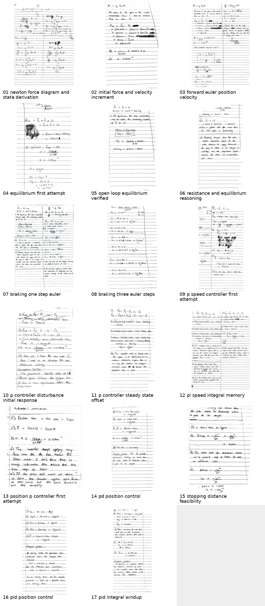
- Level, straight, forward-only educational model.
- Linear speed resistance; no grade, adhesion, delay, jerk, comfort, or wheel-slip model.
- Brake limit and controller gains are experiment assumptions, not measured railway specifications.
- The supervisor is educational and is not certified fail-safe logic.